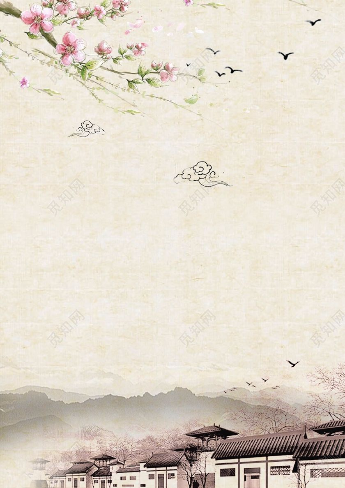

诗词华夏
搜索
首页
诗经楚辞
魏晋风度
大唐明月
两宋遗章
联系我们
账号
密码
没有账号？点我注册
每日好诗
凤凰鸣矣，于彼高冈。梧桐生矣，于彼朝阳。——《诗经·大雅》
日月之行，若出其中。星汉灿烂，若出其里。——曹操《观沧海》
明月照相思，也得姮娥念我痴。——高鹗《南乡子》
我本楚狂人，凤歌笑孔丘。——李白《庐山谣寄庐侍御虚舟》
独立小桥风满袖，平林新月人归后。——冯延巳《鹊踏枝》
西北望长安，可怜无数山。——辛弃疾《菩萨蛮》
名家新作
《大海的等候》：你是谁/行走在海边的幽灵/任海风贯穿/海潮拍打白色的浮木/赤脚留下浅浅深深的凹坑化为乌有······【更多】
作者简介：沈燕飞：浙江宁波人，现为《文学轩》杂志社主编，宁波市作家协会主席，浙江省作协副主席。诗集《乐善》获全国第四届鲁迅文学奖······【详情】
诗人专栏
苏轼：“唐宋八大家”之一，豪放派主要代表，“宋四家”之一。1037年1月8日-1101年8月24日，字子瞻、和仲，号铁冠道人、东坡居士，世称苏东坡、苏仙，北宋著名文学家、书法家、画家。
携手江村，梅雪飘裙。情何限，处处销魂。 ——《行香子》

一别姑苏已四年，秋风南浦送归船。画帘重见水中仙。 ——《浣溪沙》
雪沫乳花浮午盏，参茸蒿笋试春盘，人间有味是清欢。
诗风脸谱
送别诗
故人西辞黄鹤楼，烟花三月下扬州。
仍怜故乡水，万里送行舟。
春风知别苦，不遣柳条青。
【更多……】
悼亡诗
哀哀父母，生我劬劳。
十年生死两茫茫，不思量，自难忘。
伤心桥下春波绿，曾是惊鸿照影来。
【更多……】
羁旅诗
晨起动征铎，客行悲故乡。
无端更渡桑干水，却望并州是故乡。
星垂平野阔，月涌大江流。
【更多……】
版权信息
本站会员发布的原创诗歌，版权归原作者所有。如未经授权用作他处，作者将保留追究侵权者法律责任的权利。
京公网安备1106333号
关于我们
地址：北京市，朝阳区农展馆南里xx号